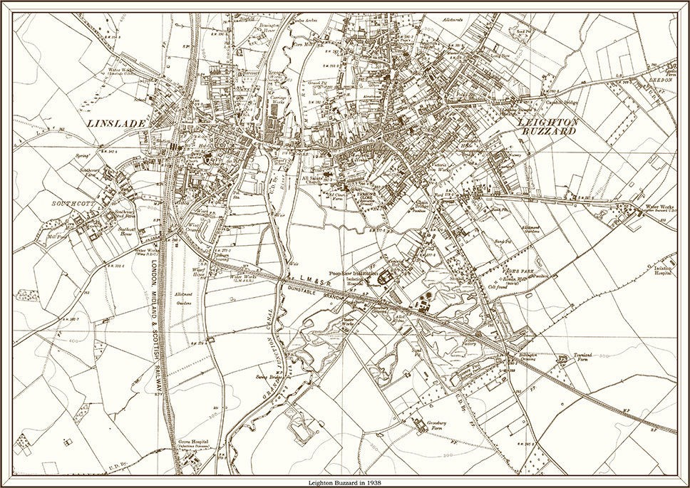

Welcome to forage focus, the site for the Leighton Buzzard Foraging Society. When the weather's fine, we like to spend our afternoons and weekends wandering the lanes and woods, learning about plants, and finding delicious things
to eat growing wild. When the weather takes a turn for the worse, we can be found in the Red Lion, swapping recipies, hints about where the best chestnuts can be found, and enjoying the occasional drink or two.

Sloe Gin